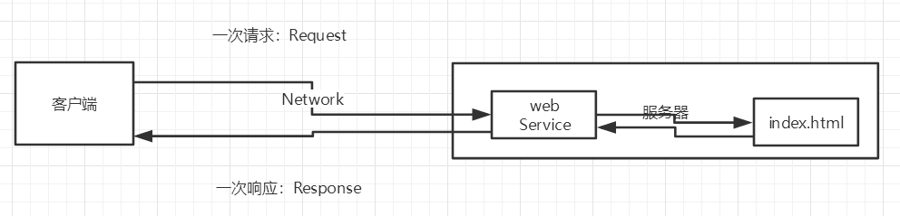
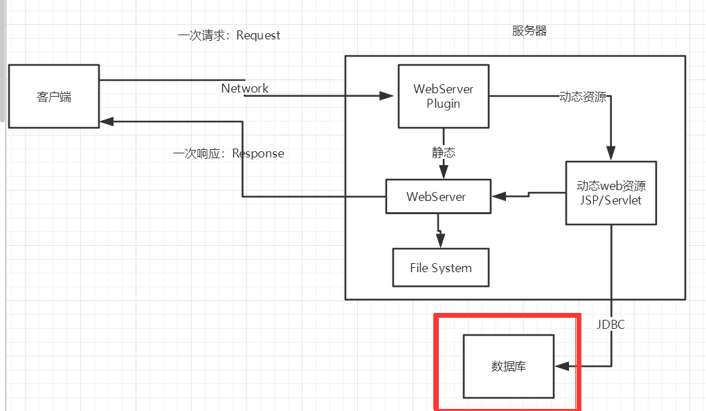

JavaWeb学习笔记
1、基本概念
1.1、前言
web开发：
- web，网页的意思 ， www.baidu.com
- 静态web
- html，css
- 提供给所有人看的数据始终不会发生变化！
- 动态web
- 淘宝，几乎是所有的网站；
- 提供给所有人看的数据始终会发生变化，每个人在不同的时间，不同的地点看到的信息各不相同！
- 技术栈：Servlet/JSP，ASP，PHP
在Java中，动态web资源开发的技术统称为JavaWeb；
1.2、web应用程序
web应用程序：可以提供浏览器访问的程序；
- a.html、b.html……多个web资源，这些web资源可以被外界访问，对外界提供服务；
- 你们能访问到的任何一个页面或者资源，都存在于这个世界的某一个角落的计算机上。
- URL
- 这个统一的web资源会被放在同一个文件夹下，web应用程序–>Tomcat：服务器
- 一个web应用由多部分组成 （静态web，动态web）
- html，css，js
- jsp，servlet
- Java程序
- jar包
- 配置文件 （Properties）
web应用程序编写完毕后，若想提供给外界访问：需要一个服务器来统一管理；
1.3、静态web
- *.htm, *.html,这些都是网页的后缀，如果服务器上一直存在这些东西，我们就可以直接进行读取。通络；

- 静态web存在的缺点
- Web页面无法动态更新，所有用户看到都是同一个页面
- 轮播图，点击特效：伪动态
- JavaScript [实际开发中，它用的最多]
- VBScript
- 它无法和数据库交互（数据无法持久化，用户无法交互）
- Web页面无法动态更新，所有用户看到都是同一个页面
1.4、动态web
页面会动态展示： “Web的页面展示的效果因人而异”；

缺点：
- 加入服务器的动态web资源出现了错误，我们需要重新编写我们的后台程序,重新发布；
- 停机维护
优点：
- Web页面可以动态更新，所有用户看到都不是同一个页面
- 它可以与数据库交互 （数据持久化：注册，商品信息，用户信息……..）

2、web服务器
2.1、技术讲解
ASP:
微软：国内最早流行的就是ASP；
在HTML中嵌入了VB的脚本， ASP + COM；
在ASP开发中，基本一个页面都有几千行的业务代码，页面极其换乱
维护成本高！
C#
IIS
php：
- PHP开发速度很快，功能很强大，跨平台，代码很简单 （70% , WP）
- 无法承载大访问量的情况（局限性）
*JSP/Servlet : *
B/S：浏览和服务器
C/S: 客户端和服务器
- sun公司主推的B/S架构
- 基于Java语言的 (所有的大公司，或者一些开源的组件，都是用Java写的)
- 可以承载三高问题带来的影响；
- 语法像ASP ， ASP–>JSP , 加强市场强度；